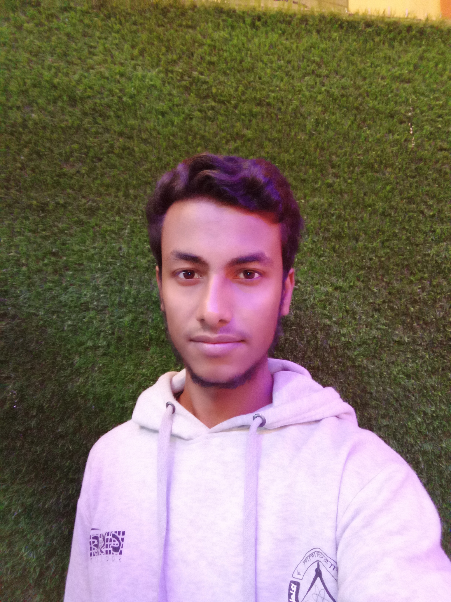

My name is Md.Mazharul Islam Nihad.I am from Habigonj.My father's name is Md. Shafiqur Rahman and my mathor's name is Nurun Nahar.I have 3 brothers and 1 sister.I completed my primary education in Shankarpasha Govt. primary School.Then my brother took me Moulvibazar.It was first time when i went out from my home for study.I was very happy for my first journey.But passing some month i realize it was very difficult for stay so far from home.i was admitted in Moulvibazar Govt. High School.Here i got my best friends and the time was going so good.After complete SSC i admitted MC Collage ,sylhet.And then i admitted CSE of SUST.